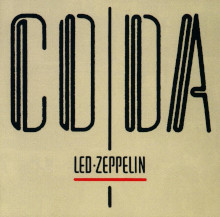

Led Zeppelin I
Genre: Rock
Style: Blues Rock, Hard Rock
Ano: 1969

- Good Times Bad Times - 2:43
- Babe I'm Gonna Leave You - 6:40
- You Shook Me - 6:30
- Dazed And Confused - 6:27
- Your Time Is Gonna Come - 4:41
- Black Mountain Side - 2:06
- Communication Breakdown - 2:26
- I Can't Quit You Baby - 4:42
- How Many More Times - 3:30
Led Zeppelin II
Genre: Rock
Style: Blues Rock, Hard Rock
Ano: 1969
- Whole Lotta Love - 5:34
- What Is and What Should Never Be - 4:46
- The Lemon Song - 6:20
- Thank You - 4:49
- Heartbreaker - 4:14
- Livin' Lovin' Maid - 2:39
- Ramble On - 4:24
- Moby Dick - 4:21
Led Zeppelin III
Genre: Rock
Style: Blues Rock, Hard Rock
Ano: 1970

- Immigrant Song - 2:25
- Friends - 3:53
- Celebration Day - 3:29
- Since I've Been Loving You - 7:24
- Out on the Tiles - 4:04
- Gallows Pole - 4:56
- Tangerine - 3:10
- That's the Way - 5:37
Led Zeppelin IV
Genre: Rock
Style: Blues Rock, Hard Rock
Ano:1971
- Black Dog - 4:56
- Rock and Roll - 3:41
- The Battle of Evermore - 5:52
- Stairway to Heaven - 8:02
- Misty Mountain Hop - 4:39
- Four Sticks - 4:45
- Going to California - 3:32
- When the Levee Breaks - 7:08
Houses of the Holy
Genre: Rock
Style: Blues Rock, Hard Rock
Ano:1973
- The Song Remains the Same - 5:30
- The Rain Song - 7:39
- Over the Hills and Far Away - 4:50
- The Crunge - 3:17
- Dancing Days - 3:43
- D’yer Mak’er - 4:23
- No Quarter - 7:01
- The Ocean - 4:32
Physical Graffiti
Genre: Rock
Style: Blues Rock, Hard Rock
Ano:1975

- Custard Pie - 4:14
- The Rover - 5:37
- In My Time of Dying - 11:06
- Houses of the Holy - 4:03
- Trampled Under Foot - 5:36
- Kashmir - 8:30
- In the Light - 8:47
- Bron-Yr-Aur - 2:06
- Down by the Seaside - 5:16
- Ten Years Gone - 6:33
- Night Flight - 3:38
- The Wanton Song - 4:10
- Boogie With Stu - 3:53
- Black Country Woman - 4:33
- Sick Again - 4:43
The Song Remains the Same
Genre: Rock
Style: Blues Rock, Hard Rock
Ano:1976

- Rock and Roll - 4:03
- Celebration Day - 3:43
- The Song Remains the Same - 6:00
- The Rain Song - 8:24
- Dazed and Confused - 26:53
- No Quarter - 12:30
- Stairway to Heaven - 10:58
- Moby Dick - 12:47
- Whole Lotta Love - 14:24
Presence
Genre: Rock
Style: Blues Rock, Hard Rock
Ano:1976

- Achilles Last Stand - 10:24
- For Your Life - 6:24
- Royal Orleans - 2:59
- Nobody's Fault But Mine - 6:15
- Candy Store Rock - 4:11
- Hots On for Nowhere - 4:42
- Tea for One - 9:23
In Through the Out Door
Genre: Rock
Style: Blues Rock, Hard Rock
Ano:1979

- In the Evening- 6:48
- South Bound Saurez - 4:11
- Fool in the Rain - 6:08
- Hot Dog - 3:15
- Carouselambra - 10:28
- All My Love - 5:51
- I'm Gonna Crawl - 5:28
Coda
Genre: Rock
Style: Blues Rock, Hard Rock
Ano:1982
- We're Gonna Groove - 2:42
- Poor Tom - 3:03
- I Can't Quit You Baby - 4:18
- Walter's Walk - 4:31
- Ozone Baby - 3:35
- Darlene - 5:07
- Bonzo's Montreux - 4:19
- Wearing and Tearing - 5:32